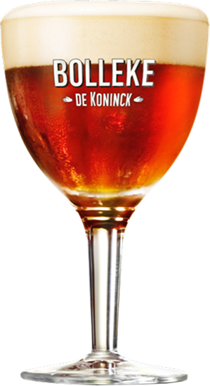
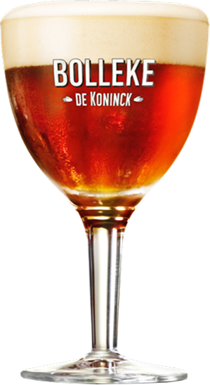

Een Bolleke keuning
Zijn bolvormige glas heeft hem het koosnaampje bolleke opgeleverd. Op z’n Antwerps bestel je het als een bolleke Keuning. En omdat er in ’t Stad al eens ‘gezwansd’ mag worden, hebben we nu met een knipoog Antwaarpse Pale Ale toegevoegd op het etiket.
In elk café en op elk terras
Naar een fris getapt bolleke hoef je in ’t Stad overigens nooit ver te zoeken. Dit Antwerpse icoon vind je in elk café en op elk terras.